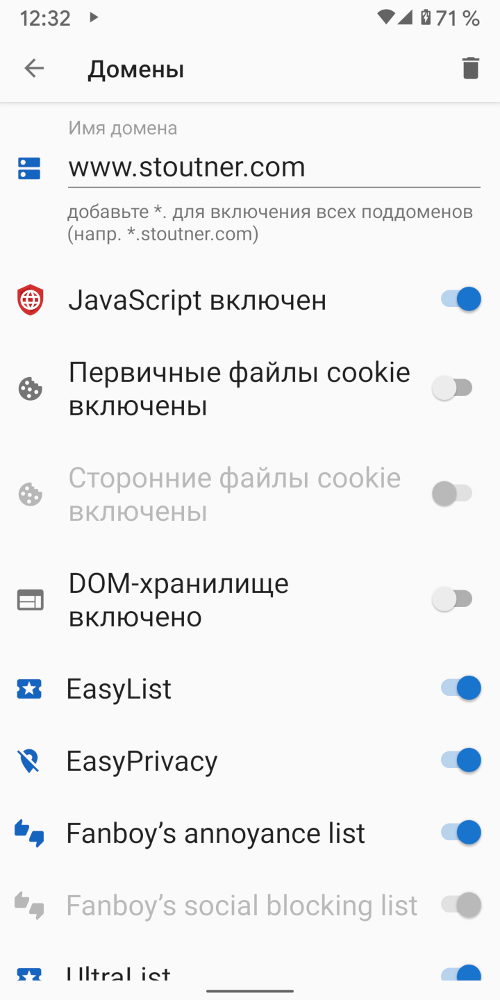

По умолчанию в Clear Browser отключены JavaScript, файлы cookie и DOM-хранилище. Однако, для правильной работы, некоторым веб-сайтам эти опции необходимы. Настройки домена могут автоматически включать нужный набор опций при посещении определенного домена.
При посещении домена, для которого определены настройки, фон поля URL становится зеленым.